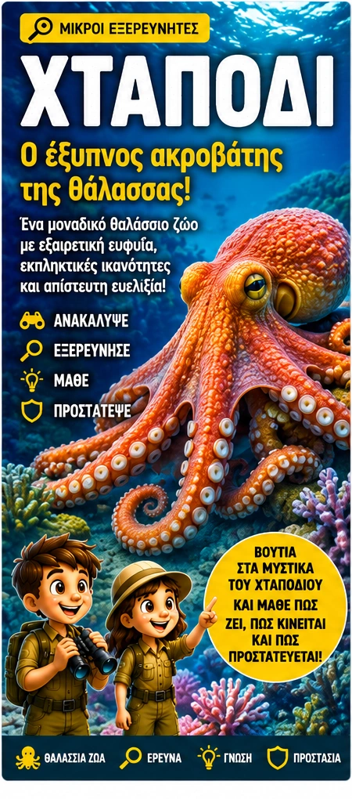

Οδηγίες συναρμολόγησης
Οι 23 σελίδες των οδηγιών παρουσιάζουν 38 αριθμημένα βήματα για τη βάση, τον μηχανισμό και την ολοκλήρωση του ρομποτικού χταποδιού.
 PDF 23 ΣΕΛΙΔΕΣ
Ρομποτικό ΧταπόδιΟδηγίες κατασκευής · Άνοιγμα PDF
Άνοιγμα PDF ↗
PDF 23 ΣΕΛΙΔΕΣ
Ρομποτικό ΧταπόδιΟδηγίες κατασκευής · Άνοιγμα PDF
Άνοιγμα PDF ↗
Robotic Octopus · Δημιουργούμε μια θαλάσσια ρομποτική κατασκευή, εξερευνούμε πώς μεταδίδεται η κίνηση και προγραμματίζουμε το χταπόδι με κίνηση, εναλλαγές φωτισμού και ήχο.
Στα βάθη της θάλασσας συναντάμε ένα από τα πιο ενδιαφέροντα ζώα: το χταπόδι. Η αποστολή της ομάδας μας είναι να κατασκευάσει μια ρομποτική εκδοχή του και να της δώσει ζωή με το LEGO WeDo 2.0. Ακολουθούμε τις οδηγίες συναρμολόγησης και δημιουργούμε μια σταθερή βάση, έναν μηχανισμό με κινητήρα και γρανάζια, το σώμα με τα πλοκάμια και το χαρακτηριστικό κεφάλι με τα μάτια. Παρατηρούμε πώς η περιστροφή του κινητήρα μεταφέρεται στον μηχανισμό και πώς συνδυάζονται τα εξαρτήματα για να κινηθεί το μοντέλο. Στη συνέχεια θέτουμε την ισχύ κίνησης στην τιμή 2 και δημιουργούμε μια επανάληψη. Μέσα στην επανάληψη ο κινητήρας κινείται προς τα αριστερά, το LED του SmartHub ανάβει με τυχαίο χρώμα και ακούγεται ο ήχος με αριθμό 1. Δοκιμάζουμε το χταπόδι, παρατηρούμε τον συνδυασμό κίνησης, φωτός και ήχου και σκεφτόμαστε τι αλλάζει όταν πειράζουμε μία εντολή.
Το πρόγραμμα ξεκινά με το τουβλάκι «Ξεκίνημα» και ορίζει την «Ισχύ κίνησης» στην τιμή 2. Στη συνέχεια μπαίνει σε «Επανάληψη»: ο κινητήρας κινείται προς τα αριστερά, το LED του SmartHub παίρνει τυχαίο χρώμα χάρη στην είσοδο με το ζάρι και αναπαράγεται ο ήχος με αριθμό 1. Η ίδια ακολουθία εκτελείται ξανά και ξανά. Παρακάτω εμφανίζεται η αυθεντική εικόνα του προγράμματος, με όλες τις εντολές και τις τιμές της.

Κατέβασε τις οδηγίες συναρμολόγησης, δες τα βίντεο παρουσίασης των δύο τμημάτων και εξερεύνησε το εκπαιδευτικό booklet.
Οι 23 σελίδες των οδηγιών παρουσιάζουν 38 αριθμημένα βήματα για τη βάση, τον μηχανισμό και την ολοκλήρωση του ρομποτικού χταποδιού.
PDF 23 ΣΕΛΙΔΕΣ
Ρομποτικό ΧταπόδιΟδηγίες κατασκευής · Άνοιγμα PDF
Άνοιγμα PDF ↗
Δες τα δύο βίντεο παρουσίασης του Ρομποτικού Χταποδιού, ένα για κάθε τμήμα.

Γνώρισε το χταπόδι: ανατομία, κύκλος ζωής, ενδιαίτημα, συμπεριφορά, ιδιαίτερες ικανότητες και προστασία του θαλάσσιου κόσμου.